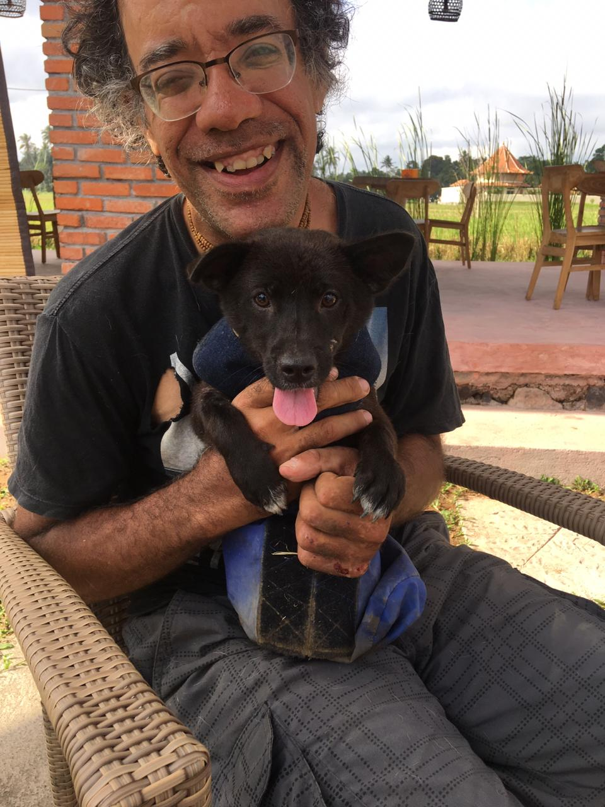
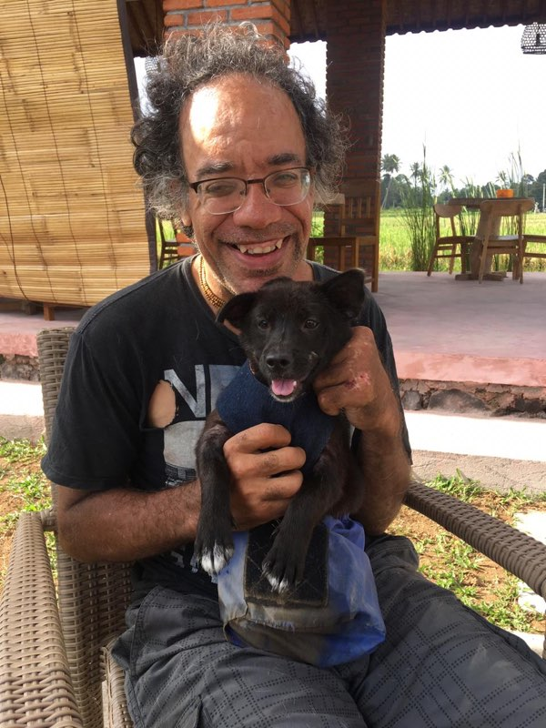
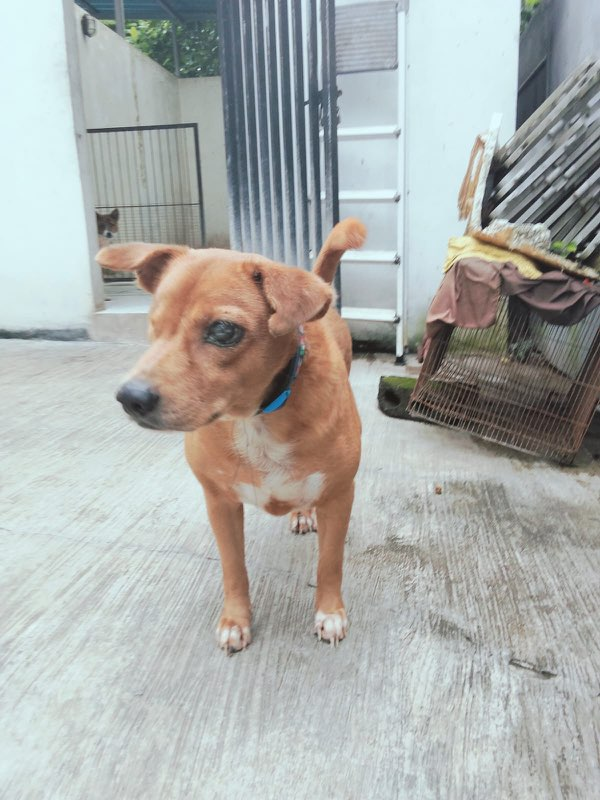
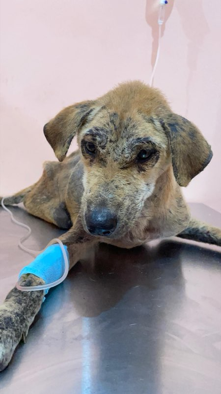
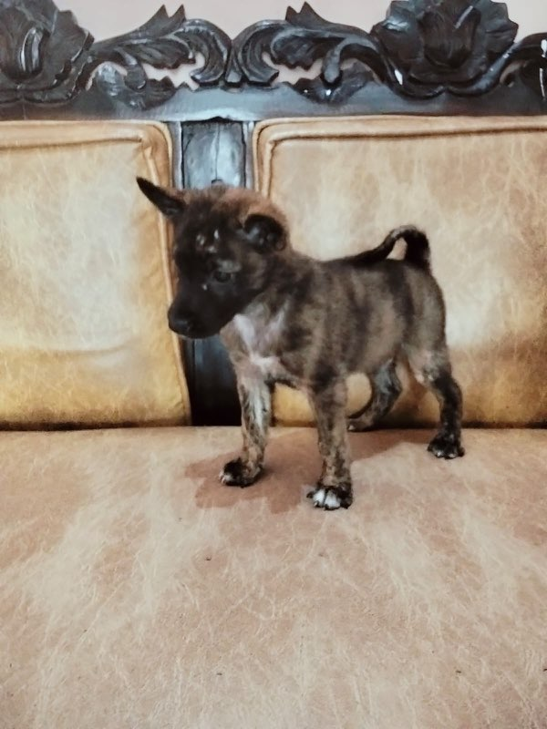
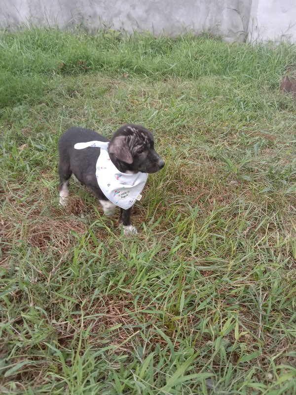
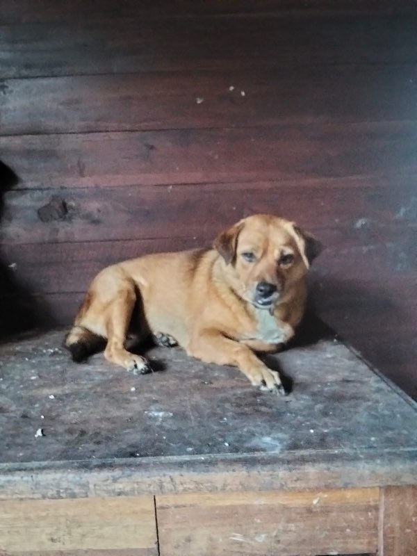
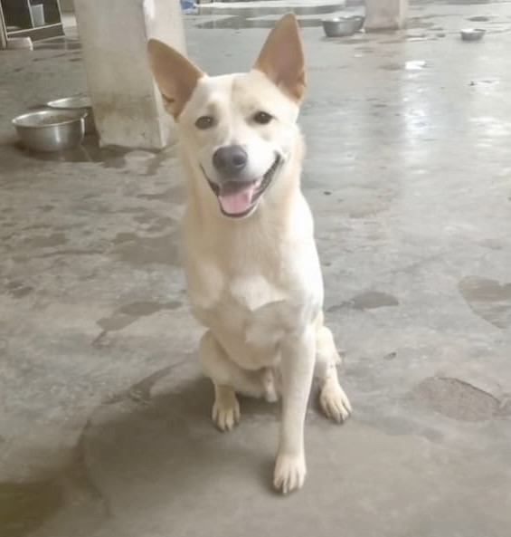
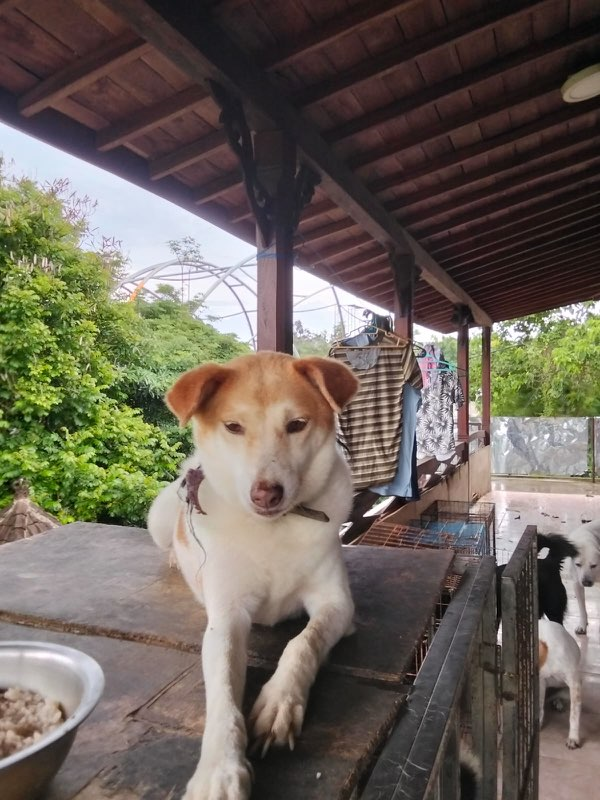

We rescue, rehabilitate, and rehome Bali's forgotten street dogs — the senior, the handicapped, the ones the world walked past.

At 18, Kenneth survived a brain aneurysm and a stroke — and lost the use of one hand. Doctors told him what he couldn't do. He's spent every day since proving them wrong.
Now approaching 58, he feeds 52 dogs every morning alone. One good hand, his forearm, and a refusal to quit. No staff. No days off. Every dollar goes directly to the dogs.
"They don't care that I only have one hand. They just know I show up."Support Kenneth's Mission
Brain aneurysm and stroke at 18. Lost the use of one hand. Never let it stop him.
A handicapped dog nobody wanted. He built it a cart. The moment it rolled through the yard — everything changed.
Every morning, alone. Hauls food, cleans kennels, treats wounds. One arm. No excuses. No days off.
Senior, handicapped, blind, broken. Custom wheelchairs for paralyzed dogs. He takes the hardest cases first.
Click on any dog to read their full story. Every one of them survived something — and every one of them is proof that love wins.

Sanctuary
Under Medical Care
Adoptable
Adoptable
Sanctuary
SanctuaryWe have 50+ dogs at the shelter waiting to meet you. Big ones, tiny ones, goofy ones, calm ones — your pawfect match is here. Come visit or message us to find them.
Every program exists because a dog needed it to survive. Here's how we make a difference, every single day.
Every day, we feed over 40 street dogs across our area of Bali who have no one else looking out for them. Local resorts and restaurants — including Nanuk in Pecatu — donate food, and we make sure it reaches the dogs who need it most. No dog in our area goes hungry.
Our rehoming program matches rescued dogs with loving forever families. Every dog is vetted, vaccinated, and nursed back to health before they meet their new people. We follow up to make sure every match is a good one. The goal is always a happy home.
For senior and handicapped dogs who may never find a traditional home, our sanctuary provides permanent, loving care. Custom carts for paralyzed dogs. No stairs. Soft beds. Gentle hands. Dignity and comfort for the rest of their lives. Our oldest resident is 14.
These are just examples. Any amount helps — $1, $5, $500 — it all goes straight to the dogs.
Send directly via Wise — low fees, fast transfers, and more of your support reaches the dogs.
Already have Wise? Just send directly to:
Don't have the Wise app? Use the bank details below to transfer from your bank.
Domestic transfer from the US, or international via SWIFT
Domestic transfer from the UK, or international via SWIFT
Domestic transfer from SEPA, or international via SWIFT
Domestic transfer from Australia, or international via SWIFT
Domestic transfer from Canada, or international via SWIFT
Wise not available in your country? No problem — message us and we'll figure it out together.
Bali Paws Rescue is a legally registered non-profit foundation in Indonesia. 100% of your support goes directly to the dogs. If you need documentation for tax purposes, reach out and we'll provide it.
Right now, our dogs have a roof over their heads at our current shelter in Jimbaran. But we're building something bigger — a brand new sanctuary in Jembrana, just 250 meters from the beach, with proper buildings, dedicated medical space, and room for even more rescues.
The land is secured. The plans are ready. Now we need to build it. Every contribution to our building fund gets us one step closer to opening the doors and giving these dogs the home they truly deserve.
Once the new shelter is complete, volunteers will be able to stay on-site and help with the dogs hands-on. Real rescue work — feeding, walking, socializing, medical care. And the beach is a 3-minute walk.

100% of your support goes directly to the dogs — food, veterinary care, medications, shelter maintenance, and emergency rescues. There are no paid staff, no office rent, no admin overhead. It costs just $2.50 per day to feed all 52 dogs (most food is contributed by local resorts and restaurants). New rescues often require thousands in medical bills. Your money goes exactly where it should: to the animals.
In Bali: Absolutely. Adopting locally is straightforward — we'll make sure the dog is healthy, vaccinated, and ready for their new home. Reach out and we'll match you with the perfect pup.
Outside of Bali: International adoption is possible but involves some complex regulations for dogs leaving Indonesia. The best thing to do is give us a call or WhatsApp so we can walk you through the process and figure out the best path together.
Yes! For $25/month you can sponsor a specific dog and receive regular updates, photos, and stories about their progress. It's the most personal way to help. Message us on WhatsApp and let us know which dog has captured your heart — or let us match you with one who needs a champion.
We're currently building our new sanctuary in Jembrana, which will have dedicated rooms for volunteers. Our current shelter is in Jimbaran. We hope to open the new one soon! Once it's ready, you'll be able to stay on-site and help with the dogs hands-on — feeding, walking, socializing, medical care. The beach is 250 meters away. Send us a message to get on the list.
Yes. Bali Paws Rescue is a legally registered non-profit foundation in Indonesia (Yayasan). We operate transparently and every dollar is accounted for. We're happy to provide documentation to any donor who requests it.
You can sponsor a dog, help with food costs, or contribute to a rescue via Wise in USD, GBP, EUR, AUD, and CAD — all the account details are on our Ways to Help section. Wise is fast, has low fees, and means more of your support reaches the dogs. If Wise doesn't work for you, no worries — just reach out on WhatsApp and we'll figure something out together.